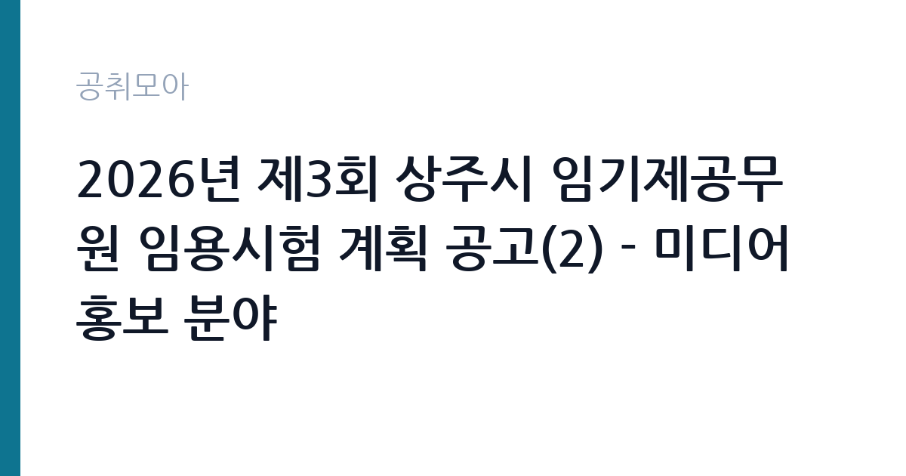

[지자체] 2026년 제3회 상주시 임기제공무원 임용시험 계획 공고(2) - 미디어홍보 분야
경상북도 상주시 · 경북 · 마감 2026-10-20 (D-15) · 출처 나라일터

한눈에 보는 모집 조건
| 기관 | 경상북도 상주시 |
|---|---|
| 공고명 | 2026년 제3회 상주시 임기제공무원 임용시험 계획 공고(2) - 미디어홍보 분야 |
| 고용형태 | 임기제 |
| 근무지 | 경북 |
| 게시일 | 2026-10-06 |
| 마감일 | 2026-10-20 (D-15) |
지원자격, 이렇게 읽으세요
- 시간선택제임기제 다급 1명
- 접수 ~2026-10-20 마감
- 세부 조건은 원문 공고문 확인
미디어홍보 분야는 통상 영상 제작과 편집, 사진 촬영, 누리소통망 운영, 보도자료 작성 중 하나 이상의 실무 경력을 요구하는 경우가 많습니다. 관련 학과 졸업이나 홍보대행사, 언론사, 공공기관 홍보 경력이 있으면 강점이 됩니다. 포트폴리오 제출 방식과 분량은 원문 공고문에서 반드시 확인하셔야 합니다.
이 공고의 포인트
이 공고의 포인트는 다급이라는 등급입니다. 다급은 7급 상당으로 지자체 시간선택제 홍보직 중에서는 상위 대우에 속합니다. 시청 공보감사실 소속으로 시정 소식과 관광, 농특산물 콘텐츠를 기획하고 제작합니다. 임용 기간 2년에 최대 5년까지 연장될 수 있어 경력을 이어가기 좋습니다.
전형은 어떻게 진행되나
전형은 서류전형과 면접시험으로 진행되며 필기시험이 없습니다. 홍보직은 서류 단계에서 포트폴리오가 사실상 실기시험 역할을 하므로 대표작을 엄선하셔야 합니다. 접수는 2026년 10월 19일부터 10월 20일까지이며, 문의처는 상주시 총무과 054-537-7163입니다.
원문에서 확인한 전형 방식
○ 모집분야: 미디어홍보 (1명) ○ 근무지역: 경북 상주시 (상주시청 공보감사실) ○ 임용기간: 2년(최대 5년) ○ 선발방법: 서류전형 및 면접시험 ○ 접수기간 : 2026년 10월 19일 ~ 2026년 10월 20일 ○ 문의처 : 054-537-7163
이런 분께 추천해요
- 영상 촬영과 편집, 카드뉴스 제작이 가능한 홍보 실무자
- 공공기관이나 지자체 홍보, 관광 콘텐츠 제작 경험이 있으신 분
- 상주 지역의 명소와 농특산물을 알리는 일에 보람을 느끼실 분
지원 전 체크리스트
- 포트폴리오 제출 형식과 분량, 용량 제한을 원문에서 확인하셔야 합니다
- 접수 기간이 10월 19일부터 20일까지 단 이틀이므로 대표작을 미리 정리하셔야 합니다
- 보유 장비나 소프트웨어 활용 능력을 증빙할 자료를 챙기시기 바랍니다
- 시간선택제 근무시간과 보수 수준을 확인하고 지원하셔야 합니다
모집 일정과 제출 타이밍
공고 게시일은 2026년 10월 6일이며 원서 접수는 10월 19일부터 20일까지입니다. 이후 서류전형 합격자 발표와 면접시험이 이어집니다. 포트폴리오 정리에는 시간이 걸리므로 공고문을 확인하는 즉시 대표작 3점에서 5점을 골라 두시기 바랍니다. 대표작 파일은 미리 열어 재생과 링크가 정상인지 확인해 두시기 바랍니다.
직무 이해하기: 지자체
미디어홍보 담당자는 시정 소식과 행사 현장을 촬영하고 짧은 영상과 사진 콘텐츠로 편집해 시 공식 누리소통망에 게시합니다. 보도자료 작성 보조와 언론 취재 지원, 관광 명소와 축제 홍보 기획도 맡습니다. 댓글과 문의에 응대하며 채널 지표를 관리하는 일까지 포함되므로 기획부터 발행, 성과 분석까지 전 과정을 경험하게 됩니다. 시청 공식 채널의 구독자와 조회수 추이를 월 단위로 정리해 보고하는 일도 포함되므로 수치 관리에 익숙하시면 좋습니다.
자기소개서 작성 팁
자기소개서에는 본인이 기획부터 발행까지 맡았던 콘텐츠를 조회수와 반응 수치와 함께 제시하시기 바랍니다. 조회수보다 체류시간이나 공유 같은 실질 지표를 언급하시면 실무 이해도가 드러납니다. 상주시를 알릴 대표 콘텐츠 아이디어를 한 가지 구체적으로 제안하시면 좋은 평가를 받으실 수 있습니다.
면접 준비 포인트
면접에서는 대표작의 기획 의도와 본인의 기여도를 설명하는 질문이 나올 가능성이 높습니다. 저예산으로 성과를 낸 경험이나 위기 게시물 대응 경험을 정리해 가시기 바랍니다. 지자체 홍보의 특수성인 공익성과 정확성에 대한 이해를 보여주시면 신뢰를 얻으실 수 있습니다.
급여·근무조건 읽는 법
시간선택제임기제 다급은 7급 상당으로 지방공무원보수규정의 하한액을 기준으로 보수가 책정됩니다. 시간선택제는 실제 근무시간 비율만큼 보수를 받으며, 행사 촬영 같은 시간외근무 발생 시 관련 수당이 지급될 수 있습니다. 정확한 월 보수액과 주당 근무시간은 원문 공고문에서 확인하셔야 합니다. 출처는 지방공무원보수규정과 임기제 보수 안내 자료입니다.
자주 묻는 질문
- 포트폴리오가 반드시 필요합니까
홍보 분야는 실무 능력을 확인하기 위해 포트폴리오를 요구하는 경우가 많습니다. 제출 여부와 형식은 원문 공고문에서 확인하시기 바랍니다. - 영상 장비가 개인 장비여야 합니까
촬영 장비 제공 여부는 기관 사정에 따라 다릅니다. 면접 단계에서 확인하시기 바랍니다. - 임기는 얼마나 됩니까
임용 기간은 2년이며 근무 실적에 따라 최대 5년까지 연장될 수 있습니다.
함께 보면 좋은 공고
[지자체] 2026년 제3회 상주시 임기제공무원 임용시험 계획 공고(6) - 학예연구 분야 — 마감 2026-10-20[지자체] 2026년 상주시 임기제공무원 임용시험 계획 공고(5) - 중앙제어실 운영 분야(상수도) — 마감 2026-10-20[지자체] 2026년 제3회 상주시 임기제공무원 임용시험 계획 공고(4) - 상황실 전담요원 분야 — 마감 2026-10-20출처: 나라일터 공개정보를 바탕으로 공취모아가 정리한 안내글입니다. 모집 조건·일정은 변경될 수 있으니 지원 전 반드시 원문 공고문을 확인하세요. 본 글은 정보 제공용이며 합격을 보장하지 않습니다.